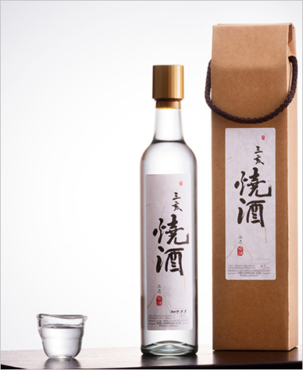

경기도
지역별 전통주
삼해주
경기도
01~04
술 종류 : 약주
전통 청주 중 하나로 서울특별시 무형 문 화재 제8호이다.
삼해주
삼해주는 고려시대부터 전해 내려온 궁중 술로, 조선시대에 이르러 순조의 딸인 복 온 공주가 안동 김씨댁에 시집오면서 그 가문에 대대로 이어져 내려오게 되었다고 한다.
술 원료
쌀과 누룩을 원료로 하여 술을 세번 발효 시켜 걸러내는 삼양주로 쌀이 많이 드는 대신 맛과 향이 뛰어나다.
삼해소주
삼해주 또한 소주로도 즐겼다. 대개 청주 로 마시는 술이지만, 증보산림경제에 기록 된 주조법은 삼양증류주인 것이 특이하다. 증류하여 소주를 만드는데 술맛이 매우 독하다고 하였다.
삼해주 찾아가는 길
03051 서울 종로구 창덕궁길 142 (원서동), 101호